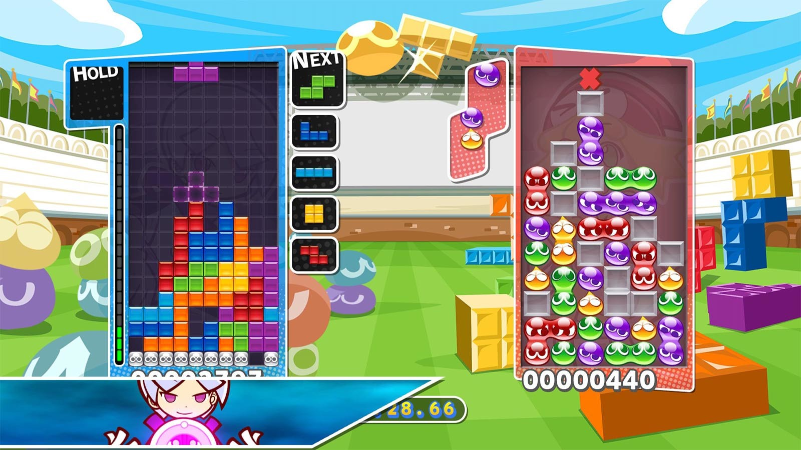
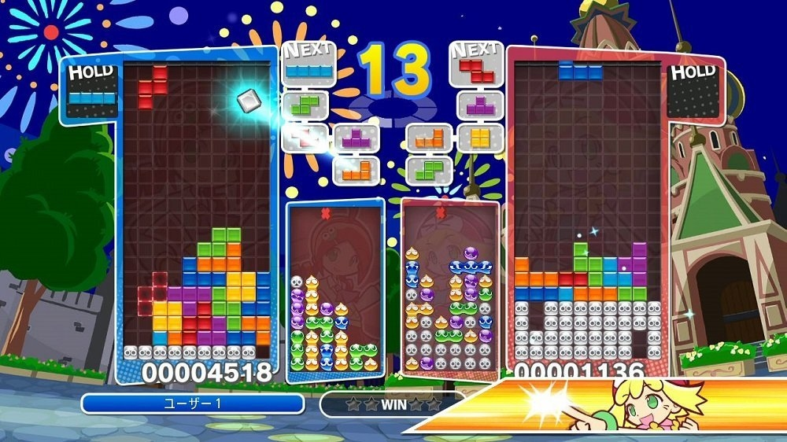
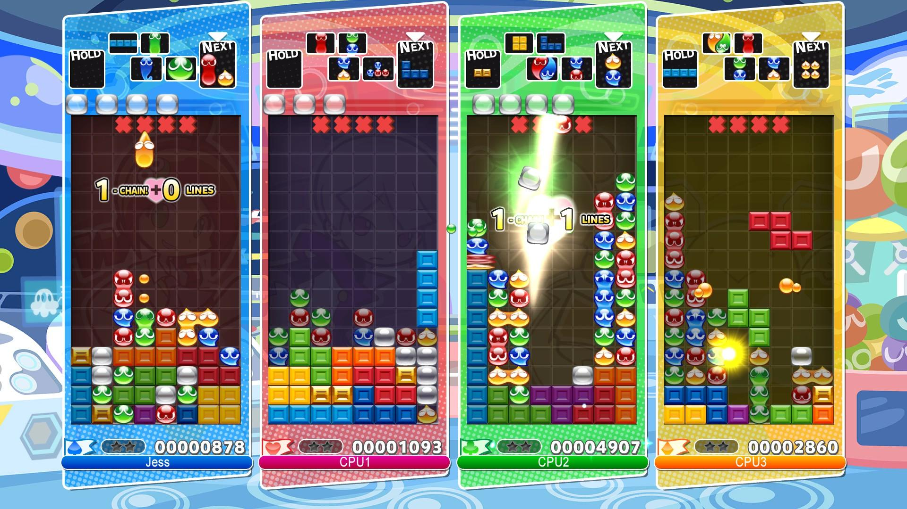

Et ce grâce à Puyo Puyo Tetris ! C’est un jeu qui mélange deux jeux. Il y a d’un côté Puyo Puyo, où l’on doit assembler des couleurs qui tombent du haut de l’écran, et bien sûr, le fameux Tetris sur lequel je vais me focaliser dans cet article.

Dans Puyo Puyo Tetris, les joueurs des deux bords peuvent s’affronter en même temps.
Tetris est un phénomène particulier. Bien que tout le monde autour de moi le connaisse, et bien que je sois un gamer aguerri, je ne l’ai jamais essayé. L’univers Tetris me paraît très rebutant : soit tu trouves un jeu Flash tout pété ou un free to play mobile pas maniable pour un sou, soit il y a des versions payantes sur console ou PC, mais avec une direction artistique bien peu inspirée, souvent très sombre et fonctionnelle. Bref, c’est la déprime.
C’est alors que le fringuant Puyo Puyo Tetris entre dans la place, paré de son esthétique kawaii. Si des petits personnages colorés qui poussent des cris aigus n’ont rien d’original, au moins il y a un style bien exécuté, et ça le rend fort attachant.
Tout en conservant les règles du Tetris moderne (avec le L1 pour garder une forme en réserve), le jeu renaît avec une intensité nouvelle. Les effets sonores et visuels sont excellents : faire un Tetris c’est MASSIF et EXPLOSIF. C’est le grain de folie dont j’avais besoin pour franchir le pas et donner une chance à ce jeu le temps d’une partie entière. Et c’est là que j’ai découvert, bien après tout le monde, la magie de Tetris.

Les personnages lancent des punchlines à chaque fois que vous réussissez un coup.
Aujourd’hui, la démarche qu’on a bien souvent en créant un jeu, c’est de choisir un genre qui existe déjà et d’y ajouter ses propres règles par dessus, en améliorer l’habillage… pour se différencier du concurrent sorti juste avant. Tetris, lui, s’éloigne du jeu vidéo pour trouver ses inspirations.
L’écrasante majorité des jeux de l’époque exploraient déjà les domaines du sport, de la simulation ou des actes de violence en tous genres. Les objectifs étaient déjà bien codifiés : survivre aux ennemis, sauver la princesse… Et non, ça n’a pas beaucoup changé aujourd’hui. Heureusement, il n’y a pas besoin d’apprécier cet univers gamer pour jouer à Tetris : les tetrominos sont de simples formes qui s’assemblent. Point. C’est universel, et aucun habillage n’essaie de cacher les règles du jeu, qui sont représentés dans leur forme la plus pure.
C’est sans doute pourquoi c’est le seul jeu sur ma PS4 qui peut rassembler des amis geeks, non-geeks, et même ma famille. N’importe qui peut s’amuser (pour peu que l’écart de skill ne soit pas trop grand) et je trouve que c’est un miracle. De façon tout aussi miraculeuse, le jeu reste pertinent sur le marché actuel, et ce presque sans avoir touché aux règles établies en 1984.
Bien sûr, la version 2017 de Puyo Puyo Tetris apporte un nouveau confort de jeu et des effets satisfaisants. Mais ce n’est qu’un détail : lorsque cette belle parure sera démodée dans 5 ans, on pourra toujours sortir une version aux visuels plus modernes et avec les mêmes règles, pour continuer à faire vivre le jeu aussi longtemps qu’on puisse l’imaginer.

Plusieurs modes mélangent Tetris et Puyo, mais je finis toujours par revenir au pur versus Tetris.
Tetris est addictif. C’était le cas lors de sa sortie, et ça l’est toujours aujourd’hui. Pourtant, on n’y trouve pas de contenu ajouté au fil du temps, pas de level up, pas de loot aléatoire. L’écran de jeu est toujours le même, nos options aussi, et quand on bouge une pièce, on sait toujours exactement où elle va finir. C’est toujours le même jeu, extrêmement prévisible… Non, bien sûr que non.
La zone de jeu n’est pas vraiment toujours la même, j’ai menti. A chaque forme posée, on fait évoluer le terrain auquel on doit s’adapter : nous sommes notre propre level designer dans un niveau qui change constamment, et c’est pour cela que chaque partie apporte son lot de tension, que le jeu se renouvelle est reste aussi rafraîchissant. Et c’est aussi pourquoi les développeurs n’ont pas besoin d’ajouter eux-mêmes du nouveau contenu.
Aujourd’hui, la façon la plus populaire de faire évoluer nos jeux est de les étendre, les complexifier indéfiniment. Tetris, dont on s’émerveille qu’il fonctionne en restant aussi simple, nous envoie peut-être le message que l’on fonce dans une mauvaise direction. Continuer à itérer de la même façon, encore et encore, sur nos concepts de RPG et de FPS, ça peut être tout à fait honorable, mais ce n’est probablement pas comme ça que se produisent les jeux légendaires et intemporels.
En tout cas, c’est comme ça que je le vois.